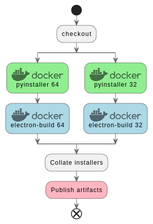

Context
A build pipeline producing an installer for Windows 64 bits for an application aiding water reservoirs operations in Pakistan. The application code is platform agnostic, but can the build pipeline also produce installers for other platforms, notably MacOS and Windows 32 bits?
If you are curious about the application, I cannot share it nor its source code yet, but you can read the Bringing transparency and consistency to Pakistan’s seasonal water planning decisions: 1991 inter-provincial Water Apportionment Accord (WAA)Tool User Guide and Reference Manual
Existing pipeline
The existing pipeline comprises two tasks building a python application (server) and the UI, which also bundles the server into an Electron application.
- task: Bash@3
displayName: 'Build python-based server for Windows with pyinstaller'
inputs:
targetType: 'inline'
script: |
cd $(Build.SourcesDirectory)/server
./build-server.sh
- task: Bash@3
displayName: 'Build the UI, and package with Electron'
inputs:
targetType: 'inline'
script: |
cd $(Build.SourcesDirectory)/docker
./build-electron.shLet’s look at each step, and the crux of what they consist of:
Building the python server
The docker image cdrx/pyinstaller-windows which uses Wine to emulate Windows.
pyinstaller --clean -y --dist ./dist/windows --workpath /tmp -F --additional-hooks-dir=hooks --add-data "waasrv/server/templates;templates" --add-data "waasrv/server/static;static" run_app.pyBuilding the application with Electron
The overall application is build using the docker image electronuserland/builder:wine-mono. I am not sure why the wine-mono tag is used, but I’ll look at it if I have to.
cd app
cp package.json package.tmp
echo entrypoint:VERSION_NUMBER:${VERSION_NUMBER}
echo entrypoint:CURRENT_UID:${CURRENT_UID}
yarn version --no-git-tag-version --no-commit-hooks --new-version ${VERSION_NUMBER}
cd ..
yarn
echo yarn package-win-publish...
yarn package-win-publish
cd app
rm package.json
mv package.tmp package.jsonyarn package-win-publish a bit curious since it seems to be to publish to GitHub releases, which we are not using.
Expanding to other platforms
The Electron-build documentation seems to target multiple platforms at least in principle.
Windows 32 bits
I am told that some of the potential users may run older versions of Windows, perhaps 32 bits.
pyinstaller’s page supporting multiple operating systems states that:
If you need to distribute your application for more than one OS, for example both Windows and macOS, you must install PyInstaller on each platform and bundle your app separately on each.
The docker image at cdrx/pyinstaller-windows includes a 32 bit image as well, with the tag python3-32bit: cdrx/pyinstaller-windows:python3-32bit, so by similarity this should be easy to swap the docker image and get a 32 bits python app installer for the server side.
If I get the doc of electron-build right, I should prepare package.json with new commands, moving from:
"scripts": {
## things
"package-win": "yarn build && electron-builder build --win --x64",
"package-win-publish": "yarn build && electron-builder build --win --x64 --publish always",
## things
}to:
"scripts": {
## things
"package-win64": "yarn build && electron-builder build --win --x64",
"package-win64-publish": "yarn build && electron-builder build --win --x64 --publish always",
"package-win32": "yarn build && electron-builder build --win --ia32",
"package-win32-publish": "yarn build && electron-builder build --win --ia32 --publish always",
## things
}MacOS
A priori, need to build on the macos image. There is no docker image such as a cdrx/pyinstaller-macos that I know of, so I doubt we can minimally repurpose the existing pipeline as we did for win 32 and 64.
Testing the feasibility
Let’s apply a flavor of the KISS principle to start testing the feasibility. Given the substantial codebase being checked out and packaged, can we start a stripped down pipeline doing as little as possible, and get by increments towards our fully fledged pipeline.
We should use a matrix strategy for the build pipeline, to avoid duplication of code between cases, in particular Win64 and Win64 builds. MacOS may be harder to fit in though. Side Note a nifty resource that may be more flexible than matrices in this StackOverflow post.
First increment
We’ll start from scratch at the top level of the workflow. One thing I am unsure of is how to gather multiple artifacts (installers) over several different jobs or stages. Let’s explore.
If I use the possibly naive:
# A simplified pipeline to test building installers for multiple platforms
trigger:
- main
resources:
- repo: self
variables:
tag: '$(Build.BuildId)'
# to get a custom '$(Build.BuildNumber)', and 'r' is a counter reset to 1 every change of the major/minor versions
name: '0.1.$(Rev:r)'
stages:
- stage: WindowsInstallers
displayName: WindowsInstallers
jobs:
- job: BuildJob
strategy:
matrix:
'Windows64':
arch_tag: 'win64'
pyinstaller_tag: 'python3'
'Windows32':
arch_tag: 'win32'
pyinstaller_tag: 'python3-32bit'
displayName: Build Tool windows installer
pool:
vmImage: ubuntu-latest
steps:
- checkout: self
submodules: 'true'
- task: Bash@3
displayName: 'Build $(arch_tag) pyinstaller'
inputs:
targetType: 'inline'
script: |
mkdir -p $(Build.ArtifactStagingDirectory)/$(arch_tag)
cd $(Build.ArtifactStagingDirectory)/$(arch_tag)
echo $(arch_tag) > installer.txt
env:
VERSION_NUMBER: '$(Build.BuildNumber)'
- task: Bash@3
displayName: 'listing task $(arch_tag)'
inputs:
targetType: 'inline'
script: |
ls -l $(Build.ArtifactStagingDirectory)
- stage: CheckContents
dependsOn: WindowsInstallers
displayName: CheckContents
jobs:
- job: BuildJob
displayName: List pipeline content artifacts
pool:
vmImage: ubuntu-latest
steps:
- checkout: self
submodules: 'true'
- task: Bash@3
displayName: 'listing task'
inputs:
targetType: 'inline'
script: |
ls -l $(Build.ArtifactStagingDirectory)
env:
VERSION_NUMBER: '$(Build.BuildNumber)'The first listing task “listing task win64” returns drwxr-xr-x 2 vsts docker 4096 Nov 16 10:04 win64
The first listing task “listing task win32” returns drwxr-xr-x 2 vsts docker 4096 Nov 16 10:05 win32: the folder win64 is not present anymore. This may be obvious to seasoned devops, but this was not to me. So, something is missing to persist the artifacts between jobs, and a fortiori between stages.
Second increment: pipeline artifacts
See Publish and download pipeline Artifacts and adapt. Although there is something I find quite confusing in that doc.
To the stage: WindowsInstallers let’s add:
- publish: '$(Build.ArtifactStagingDirectory)/$(arch_tag)'
displayName: 'Publish $(arch_tag)'
artifact: arti_$(arch_tag)The MS documentation states that:
By default, artifacts are downloaded to
$(Pipeline.Workspace)
so let’s add to the stage CheckContents:
- download: current
artifact: arti_win32
- download: current
artifact: arti_win64
- task: Bash@3
displayName: 'listing task'
inputs:
targetType: 'inline'
script: |
echo ls -l $(Build.ArtifactStagingDirectory)
ls -l $(Build.ArtifactStagingDirectory)
echo ls -l $(Pipeline.Workspace)
ls -l $(Pipeline.Workspace)ls -l $(Pipeline.Workspace) indeed then returns:
total 24
drwxr-xr-x 2 vsts docker 4096 Nov 16 10:27 TestResults
drwxr-xr-x 2 vsts docker 4096 Nov 16 10:27 a
drwxr-xr-x 2 vsts docker 4096 Nov 16 10:27 arti_win32
drwxr-xr-x 2 vsts docker 4096 Nov 16 10:27 arti_win64
drwxr-xr-x 2 vsts docker 4096 Nov 16 10:27 b
drwxr-xr-x 3 vsts docker 4096 Nov 16 10:27 sI think we now have a way to persist installers between stages, to then collate them in a bigger output artifact (not a pipeline artifact, but a project artifact)
Third increment
We change the “real” pipeline from its single architecture 64 to packaging for win 32 and 64. Leave MacOS out for now.
We add the matrix strategy for the build job:
strategy:
matrix:
'Windows64':
arch_tag: 'win64'
pyinstaller_tag: 'python3'
'Windows32':
arch_tag: 'win32'
pyinstaller_tag: 'python3-32bit'packaging the python server as an app.exe
The server Docker file now should have an argument PYINSTALLER_TAG:
ARG PYINSTALLER_TAG=python3
FROM cdrx/pyinstaller-windows:${PYINSTALLER_TAG}which is passed from the main startup shell script with:
PYINSTALLER_TAG=$1
docker build --no-cache --force-rm \
--build-arg CURRENT_UID_ARG=${CURRENT_UID} \
--build-arg PYINSTALLER_TAG=${PYINSTALLER_TAG} -t ${IMAGE_NAME} .which is launched from the pipeline by:
- task: Bash@3
displayName: 'Build python-based server for Windows with pyinstaller $(arch_tag)'
inputs:
targetType: 'inline'
script: |
cd $(Build.SourcesDirectory)/server
./build-server.sh $(pyinstaller_tag)Electron app packaging
We start from a build that was implicitely for 64 bits only:
- task: Bash@3
displayName: 'Build the UI, and package with Electron'
inputs:
targetType: 'inline'
script: |
cd $(Build.SourcesDirectory)/docker
./build-electron.sh
env:
VERSION_NUMBER: '$(Build.BuildNumber)'Starting from the inside out, the electron-builder command that starts the packaging is in the docker container entrypoint.sh, which now needs an ARCH variable
echo yarn package-${ARCH}-publish...
yarn package-${ARCH}-publishWe can pass it as an environment variable set in the docker file:
FROM electronuserland/builder:wine-mono
ARG CURRENT_UID_ARG
ARG VERSION_NUMBER_ARG
ARG ARCH_ARG
ENV CURRENT_UID=${CURRENT_UID_ARG}
ENV VERSION_NUMBER=${VERSION_NUMBER_ARG}
ENV ARCH=${ARCH_ARG}
WORKDIR /src
CMD ["./docker/entrypoint.sh"]Which is passed from the docker build script with:
ARCH=$1
docker build --no-cache --force-rm \
--build-arg CURRENT_UID_ARG=${CURRENT_UID} \
--build-arg VERSION_NUMBER_ARG=${VERSION_NUMBER} \
--build-arg ARCH_ARG=${ARCH} \
-t ${IMAGE_NAME} .and the argument is passed from the pipeline with:
- task: Bash@3
displayName: 'Build the UI, and package with Electron for $(arch_tag)'
inputs:
targetType: 'inline'
script: |
cd $(Build.SourcesDirectory)/docker
./build-electron.sh $(arch_tag)
env:
VERSION_NUMBER: '$(Build.BuildNumber)'Adding the pipeline artifacts between jobs
We need to publish the built installer, so that we can retrieve it in a subsequent job, or stage.
- task: CopyFiles@2
displayName: 'Copy build output to the artifact staging directory'
inputs:
sourceFolder: '$(Build.SourcesDirectory)/release'
contents: '*.*'
targetFolder: '$(Build.ArtifactStagingDirectory)/release/$(arch_tag)'
- publish: '$(Build.ArtifactStagingDirectory)/release/$(arch_tag)'
displayName: 'Publish $(arch_tag)'
artifact: arti_$(arch_tag)Fourth increment: Add MacOS.
For MacOS, we probably cannot have the same approach. The docker image used for electron-builder can package applications for each of the targets. However pyinstaller needs to run on an OSX host to package the server side for it, and we cannot do this easily and/or legally in a docker container.
Other questions:
- target the architecture x86_64 (MacOS on Intel) or arm64 (MacOS on Apple M1 and M2 chips)
I may tackle this in another post.
Conclusion
This was mostly a post to document for myself, and possibly others, an Azure build pipeline that evolves towards a multi-stage jobs. It clarified for me where the matrix strategy can be specified, which is not entirely obvious from reading the AZ devops documentation. Then using named pipeline artifacts to store artifacts between stages (effectively needed when a different vm image is invoked i.e. over different jobs or stages).
Appendix
Interesting, but I believe only for security research Running macos with docker osx